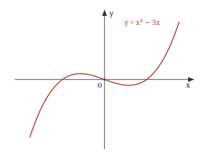
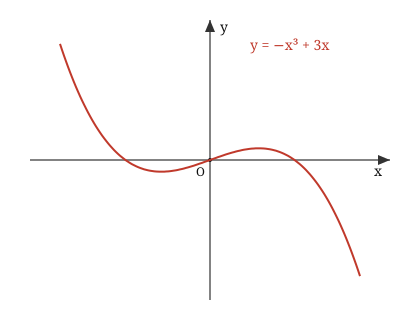
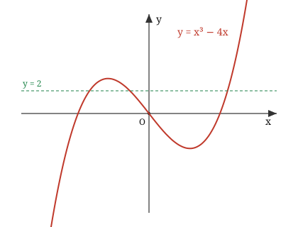
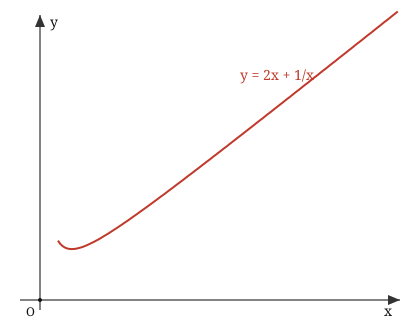
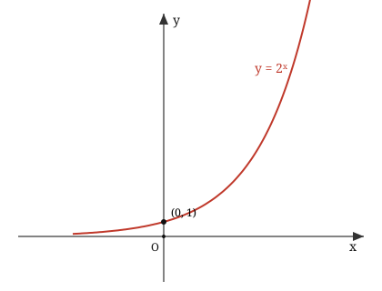
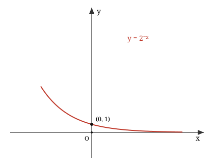

<script>if(location.hostname.endsWith('onrender.com'))location.replace('https://math-sandbox.github.io'+location.pathname+location.search+location.hash)</script>
<section class="theory" data-section="IGCSE-18.5">
<h2>18.5 Other non-linear graphs</h2>
<p class="src">Based on Cambridge IGCSE Mathematics Core and Extended Coursebook, 3rd edition (Karen Morrison and Nick Hamshaw), Chapter 18 Curved graphs, printed pp.608–619 (cubic graphs, combinations of terms, and graphs of the form \(y=a^x\)). Printed pages were read from rendered scans of part_059 (pp.608–609), part_060 (pp.611–619) and the continuation graph on p.611; printed p.610 is not in those scan parts (see the section NOTES). Own wording and new numbers.</p>
<p class="key-words"><strong>Key words:</strong> <em>cubic graph</em>, <em>exponential graph</em></p>
<h3>Cubic graphs</h3>
<p>A <strong>cubic graph</strong> comes from a cubic polynomial, for example \(y=x^3-4x\) or \(y=x^3+x^2-5x\). The typical shape has a “step”: one turning region that goes up, then down (or down, then up), and the curve is not a parabola.</p>
<ul>
<li>If the coefficient of \(x^3\) is positive, the curve comes from the bottom left and leaves towards the top right.</li>
<li>If the coefficient of \(x^3\) is negative, the curve comes from the top left and leaves towards the bottom right.</li>
</ul>
<figure><figcaption>A cubic graph with a positive coefficient of \(x^3\).</figcaption></figure>
<figure><figcaption>A cubic graph with a negative coefficient of \(x^3\).</figcaption></figure>
<p>As with quadratics in 18.3, a completed table of values is plotted and the points are joined with a smooth curve. The \(x\)-coordinates where the curve meets \(y=0\), or another line that you draw, are used to solve an equation that has been rearranged to match the graph.</p>
<div class="worked-example">
<h4>Worked example 1: Plotting \(y=x^3-4x\)</h4>
<p class="src">Book: cubic plotting (Worked example 16 style, whose printed p.610 table is missing from the scan set; the continuation graph on p.611 is of \(y=x^3-6x\)). New equation \(y=x^3-4x\), not a copy of the missing table.</p>
<p>Complete a table of values for \(y=x^3-4x\) at \(x=-2\), \(-1\), \(0\), \(1\) and \(2\), and write down the \(x\)-coordinates where this curve meets the \(x\)-axis.</p>
<ol class="steps">
<li>When \(x=-2\), \(y=(-2)^3-4(-2)=-8+8=0\). When \(x=-1\), \(y=-1+4=3\). When \(x=0\), \(y=0\) <span class="mark">B1</span></li>
<li>When \(x=1\), \(y=1-4=-3\). When \(x=2\), \(y=8-8=0\) <span class="mark">B1</span></li>
<li>The curve meets \(y=0\) at \(x=-2\), \(x=0\) and \(x=2\) <span class="mark">A1</span></li>
</ol>
<p class="final"><strong>Answer:</strong> table values \(0\), \(3\), \(0\), \(-3\), \(0\); it meets the \(x\)-axis at \(x=-2\), \(0\) and \(2\).</p>
<figure><figcaption>The graph of \(y=x^3-4x\), meeting the \(x\)-axis at \(-2\), \(0\) and \(2\).</figcaption></figure>
</div>
<h3>Combinations of terms</h3>
<p>Some graphs mix a linear term with a reciprocal term, for example \(y=2x+\dfrac{1}{x}\). A table of values (taking care that \(x\neq 0\)) is still the reliable way to plot the curve. The same reading-and-rearranging method is used to solve equations from the graph.</p>
<figure><figcaption>The graph of \(y=2x+\dfrac{1}{x}\). There is no point at \(x=0\).</figcaption></figure>
<div class="worked-example">
<h4>Worked example 2: A combined expression</h4>
<p class="src">Book: combination graphs, later in 18.5. New numbers \(y=x+2/x\).</p>
<p>Find the value of \(y=x+\dfrac{2}{x}\) when \(x=2\).</p>
<ol class="steps">
<li>\(y=2+\dfrac{2}{2}=2+1=3\) <span class="mark">A1</span></li>
</ol>
<p class="final"><strong>Answer:</strong> \(3\)</p>
</div>
<h3>Exponential graphs</h3>
<p>An <strong>exponential graph</strong> has the form \(y=a^x\) where \(a\) is a positive constant other than \(1\). Every such graph passes through the point \((0,1)\), because \(a^0=1\). For \(a=2\):</p>
<ul>
<li>\(y=2^x\) increases as \(x\) increases, and \(y=2^3=8\).</li>
<li>\(y=2^{-x}\) decreases as \(x\) increases; it is a reflection of \(y=2^x\) in the \(y\)-axis.</li>
</ul>
<figure><figcaption>The exponential graph \(y=2^x\), through \((0,1)\).</figcaption></figure>
<figure><figcaption>The exponential graph \(y=2^{-x}\), through \((0,1)\).</figcaption></figure>
<div class="worked-example">
<h4>Worked example 3: A value on \(y=2^x\)</h4>
<p class="src">Book: exponential graphs \(y=a^x\) in 18.5. New calculation \(2^3\).</p>
<p>The graph of \(y=2^x\) has been drawn. Write down the \(y\)-coordinate of the point on the curve where \(x=3\).</p>
<ol class="steps">
<li>\(y=2^3=8\) <span class="mark">A1</span></li>
</ol>
<p class="final"><strong>Answer:</strong> \(8\)</p>
</div>
<h3>Common mistakes</h3>
<ul>
<li>Joining a cubic table with a polygonal path, which hides the true turning shape.</li>
<li>Trying to plot a combination such as \(y=x+2/x\) at \(x=0\).</li>
<li>Forgetting that \(y=a^x\) always passes through \((0,1)\), or mixing up \(2^x\) with \(x^2\).</li>
</ul>
<h3>Quick checks</h3>
<div class="quick-check">
<h4>Quick check 1</h4>
<p>Find the value of \(y=x^3-4x\) when \(x=3\).</p>
<details><summary>Worked solution</summary>
<ol class="steps">
<li>\(y=3^3-4\times 3=27-12=15\) <span class="mark">A1</span></li>
</ol>
<p class="final"><strong>Answer:</strong> \(15\)</p>
</details>
</div>
<div class="quick-check">
<h4>Quick check 2</h4>
<p>Find the value of \(y=2^x\) when \(x=3\).</p>
<details><summary>Worked solution</summary>
<ol class="steps">
<li>\(y=2^3=8\) <span class="mark">A1</span></li>
</ol>
<p class="final"><strong>Answer:</strong> \(8\)</p>
</details>
</div>
<div class="quick-check">
<h4>Quick check 3</h4>
<p>Find the value of \(y=x+\dfrac{2}{x}\) when \(x=2\).</p>
<details><summary>Worked solution</summary>
<ol class="steps">
<li>\(y=2+2/2=3\) <span class="mark">A1</span></li>
</ol>
<p class="final"><strong>Answer:</strong> \(3\)</p>
</details>
</div>
<p class="marks-key"><strong>Marks:</strong> M = method, A = accurate answer (depends on M), B = independent mark. Graph readings are approximate; leave exact values exact when a calculation is algebraic.</p>
</section>
